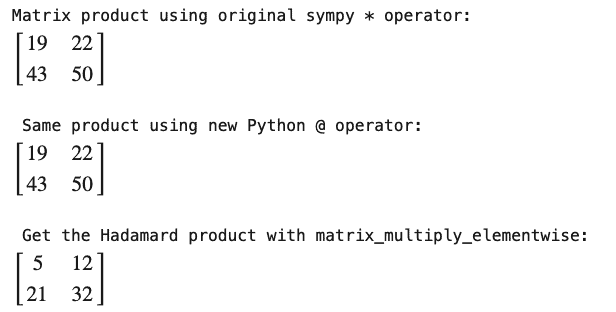
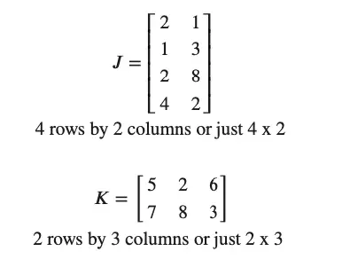
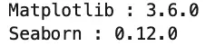
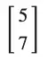

Python Matrix Multiplication: NumPy, SymPy, and the Math Behind It
Matrix multiplication is a crucial element of many Linear Algebra operations. For example, you can use it to help solve systems of linear equations. You can also use it for various image-processing tasks, such as rotating an image. Matrix multiplication is also central to machine learning and neural networks.
Because it is such an essential operation, it is helpful to understand how to do it in code and how to do it by hand. To make it easy to find what you need, however, we’re going to “start at the end.” That is to say, we will dive right in and focus first on how to do matrix multiplication in Python using two popular libraries, NumPy and SymPy.
We’ll focus primarily on what’s known as “standard” matrix multiplication (or simply taking a “matrix product”). However, we’ll also briefly discuss the less-commonly used element-wise multiplication, also known as taking the “Hadamard product.” Different tools have different approaches to how to do both, so we want to understand that.
To run the code for this article online, see the companion matrix multiplication notebook.
Once we see how to do that, we’ll take a broader look at what it means to multiply two matrices. We’ll define standard matrix multiplication, which is much less intuitive than the Hadamard product. We’ll also show how we can use NumPy as a learning tool to set up matrices that we can solve by hand and check against a solution.
NumPy Matrix Multiplication: Use @ or Matmul
If you’re new to NumPy, and especially if you have experience with other linear algebra tools such as MatLab, you might expect that the matrix product of two matrices, A and B, would be given by A * B. However, NumPy’s asterisk multiplication operator returns the element-wise (Hadamard) product.
To get the standard matrix product of two matrices A and B in NumPy instead of the Hadamard product, you can either call NumPy’s matmul function, or use the overloaded @ operator, as shown here for the two matrices:

import numpy as np
# Matrices in numpy are implemented as NumPy arrays
A = np.array([1,2,3,4]).reshape(2,2)
B = np.array([5,6,7,8]).reshape(2,2)
# Display the matrix product using @ operator
print("Matrix product using @: \n\n", A @ B, "\n")
# Display matrix product using matmul"
print("Identical result from matmul:\n\n", np.matmul(A, B), "\n")
# Display Hadamard product
print("Element-wise multiplication using *:\n\n", A * B, "\n")
Output:

Note that the @ operator was added to Python in version 3.5, so if you’re on an earlier version, you’ll need to use matmul. However, as discussed in PEP 465, the @ operator in Python was meant to provide a standard across libraries, so it’s the preferred choice for new code.
Notice that we used capital letters for A and B rather than the usual Python variable convention of lowercase letters. Mathematicians typically use capitals for matrix variables, so we followed that convention here.
How to Multiply Matrices in SymPy
Numpy arrays are based on C and are highly performant. Because of this, NumPy is a very popular choice for “matrix” operations in Python, especially those in production or for larger arrays. In contrast, SymPy is generally more highly regarded for interactive symbolic mathematics.
However, since it also supports operations on matrices and vectors, we should briefly consider how to multiply matrices in SymPy. MatLab users will feel more at home with the fact that in SymPy, you can obtain a matrix product of two sympy.matrices.Matrix objects using the standard multiplication operator, “*”. SymPy has also implemented support for the new standard Python operator, “@”. For the less common operation of finding a Hadamard product, you can use the SymPy matrix_multiply_elementwise function.
For the sake of consistency, let’s show how we might run essentially the same code from the last example in SymPy:
from sympy.matrices import Matrix
from sympy.matrices.dense import matrix_multiply_elementwise
C = Matrix([[1,2],[3,4]])
D = Matrix([[5,6],[7,8]])
print("Matrix product using original sympy * operator:")
display(C * D)
print("\n", "Same product using new Python @ operator:")
display(C * D)
print("\n", "Get the Hadamard product with matrix_multiply_elementwise:")
display(matrix_multiply_elementwise(C,D))
Using the display function takes advantage of SymPy’s built-in support for LaTeX formatting, displaying the following output:

Note that as in NumPy, the @ operator works here as well.
The @ operator is now so widely supported in Python libraries that we can say the answer to “How do I do matrix multiplication in Python” has a definitive answer: “Use the @ operator.” In addition to NumPy and SymPy, for example, TensorFlow also implements this operator. In Tensorflow, it’s equivalent to the matmul function from the package tf.linalg.
The Math Behind Matrix Multiplication
Now that we have a pretty firm grasp of how to multiply matrices in Python let’s introduce (or review) what it means to do it in mathematical terms. I will simplify this as much as possible since I know that matrix multiplication can be a little confusing when you first learn it. (In my case, I was still confused about how it worked even after I started consistently getting the correct answers!)
Before we get through how to do this without getting confused, we need some basic ideas in place, and we’ll illustrate those with some more Python code.
Matrix Multiplication is Not Commutative
The first thing to understand about matrix multiplication is that it’s not commutative. This means that unlike “regular” (scalar) multiplication, you can’t swap the terms around. Though we didn’t know it was the “commutative property” yet, we probably were first exposed to this idea when we learned our multiplication tables. Perhaps our teachers tried to console us about all that memorizing by telling us, “if you learn 2 x 3, then you already know the answer to 3 x 2!”
Except for a few very special cases, that’s not true of matrix multiplication. We can prove this to ourselves for the matrices C and D from our SymPy example.
print("C times D:")
display(C * D)
print("\nD times C:")
display(D * C)

Not only will we not get the same answer for two matrices when we change the order of the factors being multiplied – sometimes swapping terms like this means we can no longer multiply them at all! Just because we can multiply A x B, there’s no guarantee that we can multiply B x A. To understand why that is, we need to start exploring matrix dimensions.
Matrix Dimensions
First, a matrix can be any spreadsheet-like table of numbers of any size. (By the way, we’ve been using integers for our examples, but the numbers can be real or even complex numbers).
The dimensions are always expressed as the numbers of rows first, then the number of columns. We often speak of an M x N matrix, but to me, R x C would be more straightforward – rows first, then columns. But no matter. You’ll have it licked if you remember either “Royal Crown” cola or “Radio Controlled” airplanes.
So far, we’ve been dealing with square matrices (with the same number of rows and columns) but let’s see how this works with two new matrices that aren’t square:

Let’s say we want to multiply J by K. In that case, the dimensions are “4 by 2 times 2 by 3”. In other words, the number of columns of J matches the number of rows in K – or we can say the “inner dimensions” match. The inner dimensions tell us whether we can multiply. When they match, we’re in business, and we can multiply J * K. Winner winner, chicken dinner!
The outer dimensions determine the size of the resulting matrix. Therefore, we expect our result to have four rows and 3 columns (4 x 3). In other words, it will have the number of rows of the first matrix, and the number of columns from the second.
What about multiplying K * J? Well, in that case, the dimensions line up as “2 x 3 times 4 x 2”. The inner terms, 3 and 4 don’t match. In other words, K has three columns, but J has four rows. Matrix multiplication is not defined in this case.
In the code that follows, we create these matrices in NumPy, then try to multiply them both ways:
# Set up matrices
J = np.array([2, 1, 1, 3, 2, 8, 4, 2]).reshape(4,2)
K = np.array([ [5, 2, 6],[7, 8, 3] ])
# Multipy and display results (second line will raise an exception)
print(f"J @ K = \n {J @ K}")
print(f"K @ J = \n {K @ J}")
Output:

That error message could be a bit more clear, certainly, but the last part of it points you in the right direction: “4 is different from 3”.
Note, too, that the result for the case that did work has the outer dimensions from our two original arrays. The answer has four rows by three columns.
Matrix Multiplication By Hand
To do matrix multiplication by hand, we first need back up and define something called a dot product. Let’s say we have two equal-sized vectors, where a vector is just a series of numbers. (In Python, we’d call it a list or a one-dimensional array).
In addition to creating a list or a one-dimensional array, we can obtain a vector by taking just a single row or column from a matrix. For example, let’s look at our J and K matrices again:
What if we took the first row of J, [2, 1], and spun it around so it looked like this:

Notice that the two “columns” of this row look like rows now, and they match up with the rows of matrix K. Looking at the first column of K, we have:

If we multiply the corresponding cells of the above two vectors and add the result, we get the answer 17, as shown here:

When we take two vectors like this and multiply each element, then sum the results, this is called a dot product.
If we build a row by repeating this procedure by taking our rotated first row of J:
times the remaining columns of K, we can create a row of three scalar values, beginning with the 17 we just calculated:
[17 12 15]
Now, once again, when we let Python do the multiplication of J and K for us earlier, it produced this result:
J @ K =
[[17 12 15]
[26 26 15]
[66 68 36]
[34 24 30]]
Note that the first row is exactly what we created when we found the dot product of the first row of J times each column of K. If we repeat the procedure three more times for the remaining three rows of K, we’ll fill the resulting matrix.
In other words, given a result matrix, M, shaped like the row value from J and the column value from K, then each cell of M at coordinates j, k is the dot product of the corresponding row of j and column of k.
Don’t Make This Mistake
I mentioned earlier that I was still puzzled by matrix multiplication even after I started doing it correctly. Take the case of multiplying J times K. My confusion stemmed from the fact that the number of columns of J has to match the number of rows from K, yet using the cell-by-cell approach, we take the dot matrix of each row of J times the column of K.
This turns out to be a non-problem. Rember, because the inner dimensions match, each row of J has exactly the same number of “columns” (individual values) as the number of rows in K. That’s why we could do this by hand by rotating a row of J and processing the dot product of each column of K.
Python As a Matrix Exploration Tool
Of course, once you know how to do matrix multiplication, using NumPy and SymPy in Python or some other linear algebra system is less error-prone and faster. If you’re learning how to do it, however, either as part of a course or because you’re curious about it, we should point out that the row-by-row method that we’ve shown here corresponds to the more extensive “do-it-by-hand” instructions you can find in How To Multiply Matrices Quickly and Correctly in Six Easy Steps.
You can also use Python to practice the technique by generating exercises for you, using the following code as a starting point.
# Generate practice matrices in Python
import numpy as np
def get_test_matrix(rows, cols, within=(1,6)):
"""returns a matrix of size rows x cols with random integers
from the half-open range specified in the within parameter.
For example, the default (1,6) returns random numbers from 1 through 5
"""
lower, upper = within
return np.random.randint(lower,upper, rows*cols).reshape(rows, cols)
# Create and display two test matrices You can change the sizes here, but
# remember that inner dimmensions must match!
P = get_test_matrix(3,2)
Q = get_test_matrix(2,4)
print(Q, "\n\n", P)
The output will vary of course – and for working through problems, that’s what you want! When you need to check your answer, simply run print( P @ Q).